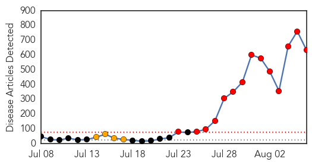
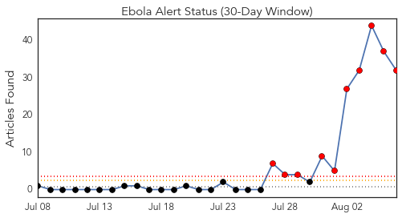
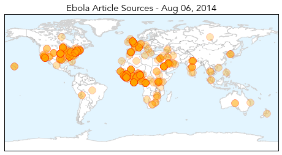
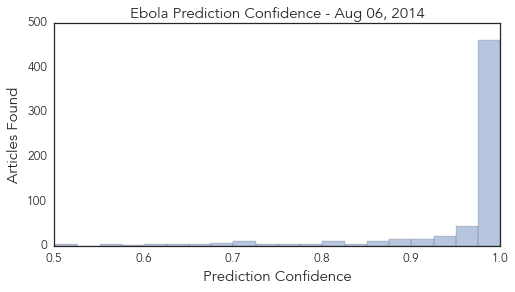

Dengue Fever
30-Day Web Trend
1 alerts, 2 warnings

30-Day Twitter Trend
7 alerts, 0 warnings

Article Locations

Article Confidences

Top Articles:
Top Tweets:
- 0.911
- pt has been tested initially for Dengue and Alkhumra and was Neg, samples sent to CDC and a lab in Ger for Ebola test!
- 0.832
- RT: La epidemia de censura es tanto o mas preocupante q la de dengue ,malaria y chikungunya
- 0.602
- RT: ¿Si ébola, malaria, dengue etc fueran enfermedades que se dieran en occidente las farmaceuticas habrían creado ya una …
- 0.582
- RT: @mirloto lo mismo con el SIDA, el dengue, la malaria, el paludismo... En esto no me tienes q convencer
- 0.556
- RT: Van 33 mil 497 casos de dengue y más de 46 mil de malaria (2210770) http://t.co/zrkiDw5yl3
- 0.556
- RT: Van 33 mil 497 casos de dengue y más de 46 mil de malaria (2210770) http://t.co/2gkP4adXuv
- 0.556
- RT: Van 33 mil 497 casos de dengue y más de 46 mil de malaria (2210770) http://t.co/cna57kpwKO
Ebola
30-Day Web Trend
14 alerts, 4 warnings

30-Day Twitter Trend
10 alerts, 0 warnings

Article Locations
Article Confidences
Top Articles:
- 1.000
- We have Ebola in the US but Africa remains most at risk
- 1.000
- Nigeria in Ebola emergency, asks US for experimental drug
- 1.000
- Experts: More Education Needed to Contain Ebola
- 1.000
- Ebola spreads, Saudis test man suspected of being infected
- 1.000
- Ebola: What is the risk of it coming to France?
- 1.000
- What Is Ebola Virus?
- 1.000
- The Cranberry Eagle Online
- 1.000
- Experts to look at experimental Ebola treatment
- 1.000
- World Health Organisation to consult ethics experts on experimental Ebola drugs
- 1.000
- Otago Daily Times Online News : Otago, South Island, New Zealand & International News
- 1.000
- Deadliest Ebola outbreak being driven by urbanisation
- 1.000
- Deadliest Ebola outbreak being driven by urbanisation
- 1.000
- State of emergency declared on Ebola
- 1.000
- Is the Middle East ready to fight off an Ebola attack?
- 1.000
- How Dangerous Is the Ebola Virus?
- 1.000
- Nigerian nurse dies from Ebola
- 1.000
- Frightened Ebola patients running away
- 1.000
- Saudi Arabia not to permit Haj pilgrims from Ebola affected countries after death of infected man
- 1.000
- Where Is The Ebola Outbreak Now? Updated Map Of Ebola Virus Outbreak Shows Spread Of Cases Outside West Africa
- 1.000
- India Advises Citizens to Defer Travel to West African Nations
- 1.000
- The Most Destructive Myths About Ebola Virus, Debunked
- 1.000
- West African Healthcare Systems Swamped As Ebola Death Toll Tops 900
- 1.000
- South Korean University Bans Nigerian Students Over Ebola Fears
- 1.000
- Homeland Security News Wire
- 1.000
- Ebola Toll Tops 900; Saudis Investigate Death
- 1.000
- Nigerian nurse dies from Ebola
- 1.000
- West African healthcare systems reel as Ebola toll hits 932
- 1.000
- Bodies dumped in streets as West Africa struggles to curb Ebola
- 1.000
- West African healthcare systems reel as Ebola toll hits 932
- 1.000
- Ebola feared to have reached Middle East as man tested for disease dies in Saudi Arabia
- 1.000
- Nigeria acknowledges slow response in Ebola case
- 1.000
- Ebola-skeptics, transmission, survival and treatment: Five facts about the disease
- 1.000
- Ebola outbreak deaths top 930 as WHO emergency meeting convenes
- 1.000
- Battling Ebola: Tracking the Virus
- 1.000
- Liberia declares state of emergency over Ebola virus
- 1.000
- Ebola: Global experts begin emergency talks at WHO
- 1.000
- Saudi man suspected of contracting Ebola dies
- 1.000
- Saudi man suspected of contracting Ebola dies
- 1.000
- Ebola death toll rises; 932 confirmed, World Health Organization says
- 1.000
- World Health Organisation to consult ethics experts on experimental Ebola drugs
- 1.000
- CDC issues highest-level alert for Ebola
- 1.000
- Ebola outbreak: Britons quaratined at home after returning from west Africa
- 1.000
- Liberia declares state of emergency as Ebola death toll rises to 932 — RT News
- 1.000
- What is Ebola? A breakdown of the outbreak
- 1.000
- As Ebola Spreads in Nigeria, Debate About Experimental Drugs Grows
- 1.000
- CDC Getting Dozens Of Calls ‘About People Who Are Ill After Traveling In Africa’
- 1.000
- As Ebola Spreads in Nigeria, Debate About Experimental Drugs Grows
- 1.000
- Deaths from Ebola Outbreak Approaching a Thousand
- 1.000
- The 5 reasons you shouldn’t panic about the Ebola virus
- 1.000
- Over 900 die from Ebola virus disease in West Africa
Showing top 50 articles...
Top Tweets:
- 0.957
- RT: Ebola outbreak began Feb, malaria claimed +-300k , tuberculosis claimed 600k+ lives. Ebola has attention but is not Africa'…
- 0.907
- RT: A Saudi man suspected of being infected with Ebola virus died at 8:45 a.m. today at hospital in Jeddah: Health Ministry …
- 0.895
- RT: The UN is amid a 2-day emergency meeting to determine whether the Ebola outbreak is a public health emergency of interna…
- 0.874
- RT: El murciélago transmite el ebola.... Lean lean honorables..... Aquí hablando de malaria🏃💨
- 0.872
- RT: Malaria, Poverty SDoH MT: Short list of Africa's health problems: Cancer TB Flu HIV ... Ebola http://…
- 0.846
- RT: Viruela, VIH, malaria, ebola.... Males que se extienden por África ¿o son experimentos de farmaceúticas?"El jardinero fiel" …
- 0.836
- The seriousness of the Ebola outbreak is a powerful reminder that infectious diseases can strike people anywhere. http://t.co/rqDIrUc3Te
- 0.831
- Breaking: pt with suspected Ebola inf announced yday by MoH died 2day. Doctors say it’s Ebola. Conf’ry test pending! http://t.co/3vKg4oKNLm
- 0.825
- Deadliest Ebola outbreak being driven by urbanisation http://t.co/d2z25xeuFN
- 0.810
- Ethics, ebola, and experimental medications; @sciencemagazine releases ebola special collection. HealthSecurity http://t.co/H1JhGCUg02
- 0.805
- RT: Since the Ebola outbreak began in Feb, 300k people have died from malaria, tuberculosis has claimed over 600k lives. http:…
- 0.801
- The patient at Mount Sinai Hospital has tested negative for Ebola.
- 0.794
- RT: "Since the Ebola outbreak began in February [800-plus deaths], around 300,000 people have died from malaria" http://t…
- 0.760
- RT: A plea for sanity. Ebola: 900 dead. Malaria: 300k. TB: 600k. Flu: 250k. @jamesrbuk http://t.co/jlUSK6qUJB ht …
- 0.745
- RT: "@hajrah_bah: Ebola virus just made HIV sounds like malaria
- 0.734
- RT: ‘Since the Ebola outbreak began, ~300,000 have died from malaria, while tuberculosis has likely claimed >600,000.’ htt…
- 0.726
- RT: @coyoteadams you aren't getting Ebola or malaria are ya? LOL
- 0.699
- The WHO in an emergency meeting about Ebola. They may declare this a PHEIC. Public Health Emergency of International Concern.
- 0.691
- RT: A call from the UK y'nite and d lady was describing 'Ebola outbreak like Malaria outbreak' whereas IT IS LOCALIZED and CONTAINE…
- 0.658
- RT: We know how to stop Ebola from spreading w/ basic epi & response: find disease, isolate patients, trace/monitor contacts…
- 0.658
- RT: We know how to stop Ebola from spreading w/ basic epi & response: find disease, isolate patients, trace/monitor contacts…
- 0.655
- RT: Visit http://t.co/QDyfNjAD0j for the latest updates on Ebola , EbolaOutbreak, EbolaVirus, malaria, Influenza, Rabies, De…
- 0.654
- RT: Doctors, nurses and health staff urgently needed to combat ebola - more from here: http://t.co/C6mMmzss2Z
- 0.629
- RT: xq skrilex es tu idolo¿ — Me dio cáncer, sida, inluenza, gripe Española, peste bubónica, malaria, ebola, cólera,... http:/…
- 0.626
- RT: Since the Ebola outbreak began in Feb, around 300,000 people have died from malaria, and 600,000 from tuberculosis. http://…
- 0.618
- RT: @xavieraldekoa La mortalidad del Ebola llega al 90%,la de la malaria menos del 30%,el SIDA puede llegar a ser c…
- 0.615
- RT: 1711 Ebola cases(confirmed, probable & suspect), 932 deaths as of 4 August Guinea Liberia Nigeria SierraLeone http://t.co…
- 0.574
- RT: WHO to convene a panel of medical ethicists to explore the use of experimental treatments in the ongoing Ebola outbreak in West A…
- 0.566
- RT: "@Olumytyy: Hmm,ebola is now making Aids look lyk malaria"
- 0.541
- RT: Folks who think biotechs should release their Ebola drugs should read paragraph 2 in this story. Cupboard isn't full h…
- 0.519
- RT: Ebola is serious, but malaria and road accidents are more deadly in West Africa, @thetrblmkr explains: http://t.co/X5qfknN3…
- 0.502
- RT: It doesn't help that the symptoms of ebola are like malaria.